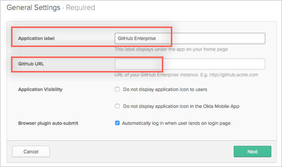
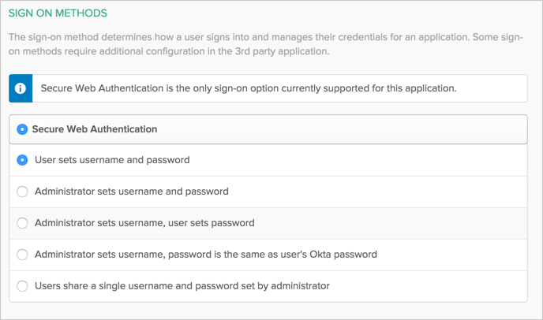
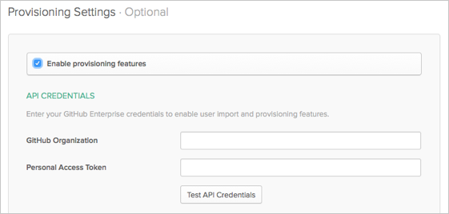
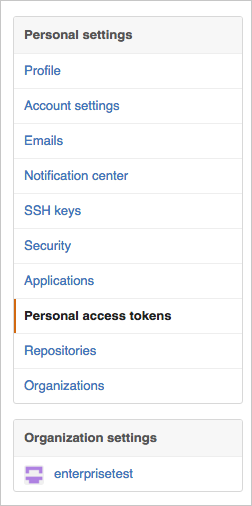
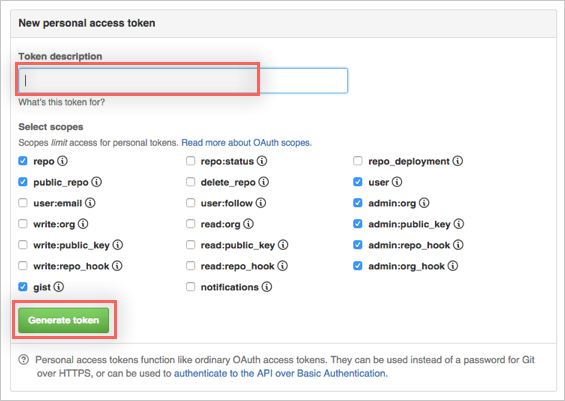
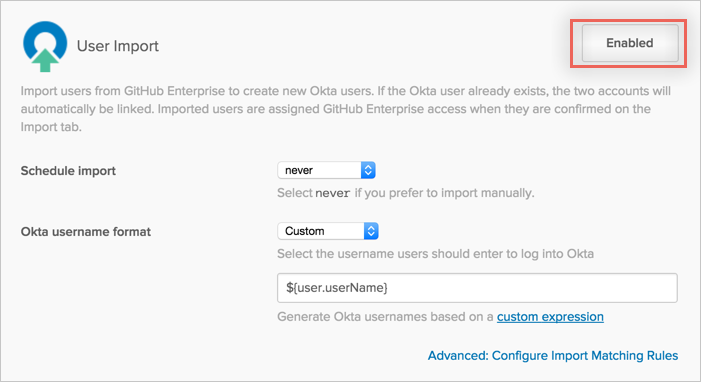
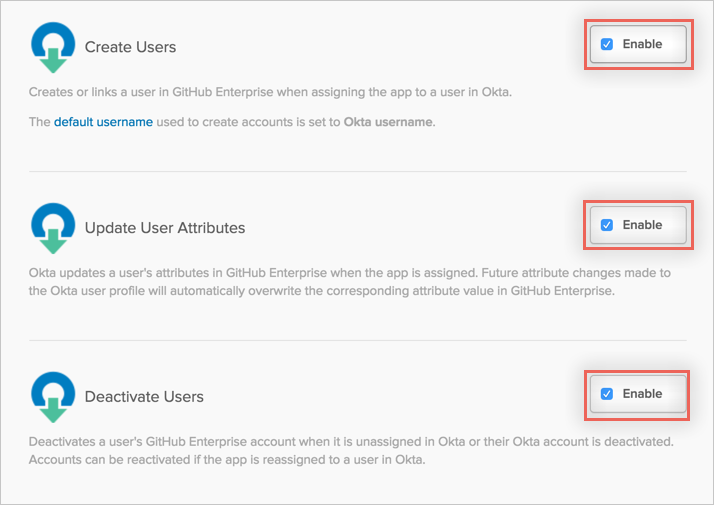
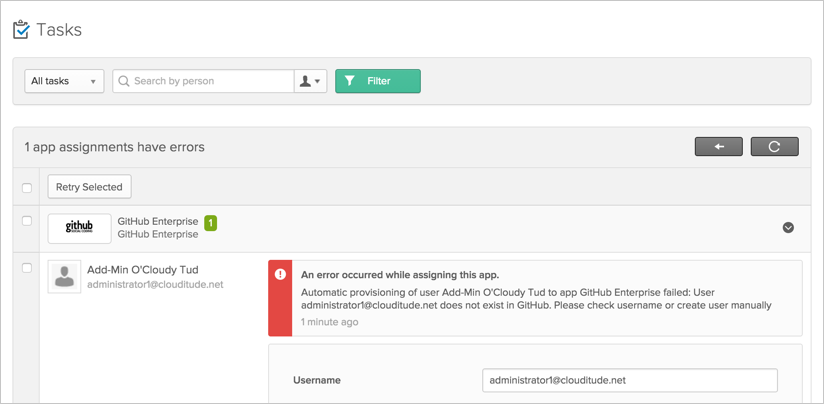

This guide provides the steps required to configure Provisioning for GitHub Enterprise.
The following provisioning features are supported:
Import New Users
New users created in the third party application will be downloaded and turned in to new AppUser objects, for matching against existing OKTA users.
Push New Users
New users created through OKTA will also be created in the third party application.
Push Profile Updates
Updates made to the user's profile through OKTA will be pushed to the third party application.
Push User Deactivation
Deactivating the user through OKTA will remove the user from the organization and all teams in the third party application.
Reactivate Users
Reactivating the user through OKTA will add the user back to the organization and selected teams in the third party application.
GitHub Enterprise does not support creation of new users through its API. You cannot assign GitHub through Okta to a user who does not already exist on the GitHub side. When assigning a user to the GitHub app, ensure that the user already has a GitHub account. Okta will only add the existing GitHub user to the selected Organization and Teams managed by Okta.
GitHub Enterprise does not support changes to a user's profile other than team memberships. Changing the username of a user can cause problems such as org/team unassignment.
When assigning a user to GitHub through Okta who is part of GitHub but not a member of the organization, the user will receive an invitation to join the org. Until the user accepts the invitation, they will be in pending status. Pending users will not show up during user imports nor can their profiles be updated.
Before you configure provisioning for GitHub Enterprise, make sure you have configured the following:
Under General Settings for the GitHub Enterprise app, enter an Application label of your choice and the GitHub URL (the full URL of your GitHub Enterprise instance:

Select your Sign-on Options options for the GitHub Enterprise app. The Okta username format is typically set to the email address, which is not the same as the GitHub application username as a GitHub username cannot be in an email format. To resolve this conflict when importing users and pushing profile updates, you must change the application username format, which is set by default to the Okta username, to either a Custom, email prefix, username prefix or (None):


Once you have configured/confirmed your General Settings and Sign-on Options, click Next to take you back to the Provisioning tab (see below).
Configure your Provisioning settings for GitHub Enterprise as follows:
Check the Enable provisioning features box.
Enter your GitHub API Credentials:
GitHub Organization.
Personal Access Token.

If you do not have an API Access token:
Go to your GitHub Enterprise instance and login to your account.
Click on your icon button near the top right of the page, then select Settings from the drop down menu:
In this example, it is the green icon.
From Settings, select Personal access tokens.

Select Generate new access token.
In the New personal access token window, enter a Token description, then select the appropriate scopes (make sure to provide admin rights), then click Generate token.

Copy the generated token. Be sure to keep the token somewhere safe but accessible, once you leave the page, you are not able to copy the token again.
Go back to Okta and enter your newly generated access token.
Click Test API Credentials to verify the token. You should see a message that notifies you that GitHub Enterprise was verified successfully.
Scroll down and enable the user import and provisioning features you want:


Click Save.
You can now assign people to the app, if needed.
Setting the application username format to the default of email address causes problems when pushing profile updates. Make sure it is set to a custom format to match the username imported from GitHub or to None.
If you try to assign a user to GitHub through Okta, who does not already exist in GitHub, a task is generated informing you that the provisioning failed. You can view this task by going to Dashboard > Tasks.

When assigning a user to GitHub through Okta, who is part of GitHub but not a member of the organization, the user receives an invitation to join the org. Until the user accepts the invitation, they will be in a pending status. Pending users do not show up during user imports nor can their profiles be updated.